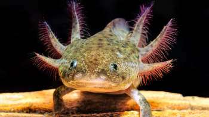

POISSONS

Faune d'eau douce au Mexique
Côte atlantique de l'est du Mexique
Astyanax mexicanus
Grottes de Cueva Chica
Poecilia sphenops
Sud-est du Mexique
Xiphophorus helleri
Sud-est du MexiqueAMPHIBIENS ET CRUSTACÉS

Ambystoma Mexicanum
Lacs Xochimilco et Chalco
Cambarellus patzcuarensis
Lac de Pátzcuaro